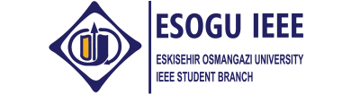

IEEE mühendisliğin yaratıcılık, geliştirme, bütünleştirme, paylaştırma işlevine , insanlığa yararlı bilimlere ve uzmanlık alanlarına katkıda bulunan kar amacı gütmeyen teknik bir mesleki organizasyondur. Tarihi gelişimine baktığımızda AIEE (Amerikan Elektrik Mühendisleri Enstitüsü) ve IRE (Radyo Mühendisleri Enstitüsü) topluluklarının birleşmesi ile 1963 yılında resmen kurulan IEEE, dünya genelindeki en büyük teknik organizasyonlardan birisidir. IEEE tüm dünyada Elektrik-Elektronik ve Bilgisayar Mühendisliği yayınlarının yaklaşık %25 ‘ini tek başına yayınlamaktadır;
IEEE, üyelerinin hayat boyu süren öğrenim sürecinde onlara mesleki açıdan çok önemli yardımlarda bulunur;
IEEE dünya çapındaki üyelerinden oluşan bir topluluğu şöyle oluşturur:
IEEE Vizyonu
Teknolojik gelişme ve yenilikleri teşvik ederek küresel zenginliği artırmak, üyelerinin kişisel gelişimini sağlamak ve topluluğu dünya çapında ilerletmek.
IEEE Misyonu
İnsanlığın ve mesleğin yararı için elektro teknoloji, bilgi teknolojileri ve fen bilimleri hakkındaki mühendislik yöntemleri olan yaratmayı, geliştirmeyi, bütünlemeyi, paylaştırmayı ve bilgiyi uygulamayı teşvik etmektir.
IEEE Ahlak Kuralları
Biz IEEE üyeleri, dünyadaki yaşam kalitesini etkilemede teknolojimizin öneminin farkında olarak; ve mesleğimize, üyelere ve komitelerimize karşı kişisel ödevimizi kabul ederek, kendimizi buradaki ahlaki ve profesyonel tavra adıyor ve:
IEEE Tarihçesi
IEEE ve öncüleri AIEE (American Institute of Electrical Engineers-Amerikan Elektrik Mühendisleri Kuruluşu) ve IRE(Institute of Radio Engineers- Radyo Mühendisleri Kuruluşu) 1884 yılına uzanır.En başından beri IEEE, elektro teknolojinin ve bununla bağlantılı bilimlerin kuram ve uygulamalarını ileriye götürmüş, teknolojik yenilik ve gelişmeler için katalizör görevi yapmış ve üyelerinin ihtiyaçlarını geniş çeşitlilikteki program ve hizmetleriyle desteklemiştir.
19. Yüzyıldaki Büyüme:
19. yüzyılın son çeyreğine elektrik teknolojisindeki büyüme damgasını vurmuştur. 1880`lerin başında,
· telgraf kabloları ABD`yi çaprazlama donatmıştı.
· su altından kablo yoluyla Amerika ve Avrupa arasında bağlantı kurulmuştu.
· ark lambaları belli başlı şehirlerde kullanımdaydı.
· Thomas Edison`un Pearl Street İstasyonu New York`taki elektrik lambalarının güç ihtiyacını karşılıyordu.
· çok sayıda elektrikli alet üreten firma mevcuttu.
· telefonun haberleşme cihazı olarak önemi giderek artmaktaydı.
Teknolojideki bu büyüme ve Philadelphia`daki Franklin Kuruluşu`nun elektrik konulu uluslar arası bir sergi düzenleme planları; içinde Thomas Edison, Elihu Thomson ve Edwin Houston`un da bulunduğu, Amerika`nın önde gelen yirmi beş elektrik mühendisinin bir araya gelerek … bir toplumun oluşumu için çağrı yayımlamalarına yol açtı. 13 Mart 1884`te AIEE New York`ta kuruldu ve kısa sürede Amerikan elektrik mühendislerinin temsilcisi olarak kabul gördü.
AIEE –Kablolu Haberleşme Işık ve Güç:
Kuruluşundan itibaren AIEE`nin ana ilgi alanları şunlardı:
· Kablolu haberleşme ve
· Işık ve güç sistemleri.
Elektriğe dayalı sanayi standartlarının geliştirilmesinde öncü olan ve bu sürece etkin olarak katılan AIEE elektrikle ilgili standart çalışmaları için ABD geneline tesislerini yaydı. İlk 30 yıllık süreçte kuruluş şu gibi iç meselelerle yüzleşmiş ve bunlara çözüm bulmuştur:
· örgütlenme için kalıcı karargahların yerleştirilmesi
· uzaklara yayılmış üyelerle ve öğrencilerle kurulacak bağlantı için bir işleyiş geliştirilmesi
· artan uzmanlaşma sorununu çözmek için kurulan komiteler yardımıyla yeni teknik ilgi alanlarını teşvik etmek
Ancak 1912`den itibaren, genişlemekte olan radyo alanında uzmanlaşanların ilgi alanları ve ihtiyaçları yerel ve periyodik olarak yapılan teknik komite toplantılarıyla karşılanamamaya başladı.
IRE –Kablosuz Haberleşme:
İki büyük yerel örgütlenme –Telsiz ve Telgraf Mühendisleri Topluluğu ve Telsiz Kuruluşu–
birleşerek kablosuz haberleşmenin geliştirilmesine katılan bilim adamları ve mühendisler için bir kuruluş oluşturdular –Radyo Mühendisleri Kuruluşu.
IRE`nin başlangıç üyelerinin çoğu aynı zamanda AIEE`nin de üyesiydiler ve iki kuruluş birleşip IEEE`yi oluşturana kadar (1963) ortak üyelere sahip olmaya devam etti. IRE ve AIEE`nin yapısal gelişimi ve genel etkinlikleri benzerdi.
· Merkezi bir yönetimin altındaki profesyonel gruplarda uzmanlaşmış alt parçalar toplanmıştı.
· Coğrafi birimler ve öğrenci kolları oluşturulmuştu.
· Toplantılar ve yayınlar geniş bir literatür oluşturmayı ve bilgi alışverişini hızlandırıyordu.
Radyo teknolojinin doğası gereği IRE`nin ilgi alanı doğal sınırlarının çok ötesine geçti.Bu yüzden, yeni kuruluş birçok ülkeden üye çekti ve sonunda belirli alanlarda dünyanın birçok yerinde birimler kurdu. IRE Tutanakları`nın başlangıcından itibaren düzenli olarak ABD dışından yazarların yazıları yayımlandı.
“Elektronik`in” Katılımı
1930`larda elektronik elektrik mühendisliği terimleri arasına girdi. Elektronik mühendisleri IRE`nin üyesi olmaya başladılar fakat; elektron tüpü teknolojisinin uygulamaları o kadar yaygınlaştı ki IRE ve AIEE`yi birbirinden ayıran teknik sınırlar ayırt edilememeye başladı.
II.Dünya Savaşı`ndan sonra, iki kuruluş artan bir rekabetin içine girdiler.çabaların örtüşmesi ve ikiye katlanması sorunu arttı, birleştirilen komiteler ve toplantılarla sadece kısmen çözülebildi.
AIEE ve IRE IEEE`yi Oluşturma Yolunda:
1961`de IRE ve AIEE`nin önderleri bu sorunları birleşme yoluyla çözmeye karar verdiler.
Bir sonraki yıl birleşme planı hazırlandı ve 1 Ocak 1963`te gerçekleştirildi.
Eskişehir Osmangazi Üniversitesi IEEE Öğrenci Kolu, başta tüm mühendislik fakülteleri olmakla beraber, tüm bölümlere hitap eden bir koldur. Kulübümüz, sene içerisinde üyelerimize yönelik konferanslar ve seminerler düzenlenmesi, teknik dersler verilmesi, sosyal ve teknik gezilerin organize edilmesi amacıyla Eskişehir Osmangazi Üniversitesi Mühendislik – Mimarlık Fakültesi Elektrik Elektronik Mühendisliği Bölümü bünyesinde faaliyet göstermektedir.
Eskişehir Osmangazi Üniversitesi IEEE Öğrenci Kolu, sadece teknik temelli bir kulüp olmayıp üyelerinin sosyal yaşamları ile ilgili sorumluluk üstlenir. Tanışma yemekleri, geziler ve benzeri etkinlikler üyelerin sosyal bireyler olması için yapılan çalışmalardan bazılarıdır. Eskişehir Osmangazi Üniversitesi IEEE Öğrenci Kolu üyelerinin mesleki ilgi alanları ile bilgilenmesini, fikir dünyalarının gelişmesini, kişisel özelliklerinin ortaya çıkarılıp bu eğilimlere göre iş bölümü kavramının geliştirilmesini sorumluluğu bilir.
Eskişehir Osmangazi Üniversitesi IEEE Öğrenci Kolu, Türkiye’de ve dünyada olan gelişmeleri yakından takip etmek amacıyla Türkiye ve dünyanın çeşitli bölgelerindeki öğrenciler ile iletişim içinde olup bilgi ve fikir alışverişinde bulunur.
Geçtiğimiz yıl beşincisi düzenlenen Mezunlar Söyleşisi etkinliğinde temel amaç, Eskişehir Osmangazi Üniversitesi mezunları ile öğrencileri bir araya getirerek öğrencilerin gelecekte iş yaşamında karşılacakları zorlukları öğrenebilecekleri, yeni-orta-eski mezunların yardımı ile önlerini görebilecekleri gelenekselleşmiş bir etkinliktir.
Etkinlik moderatörlüğünü bir senelik bir ara haricinde Prof.Dr. Osman Parlaktuna’na tarafından yapılan etkinlik, Eskişehir Osmangazi Üniversitesi ve Anadolu Üniversitesi Elektrik-Elektronik Mühendisliği Mezunları Derneği’nin büyük yardımları ile gerçekleştirilmektedir.
Bazı üniversitelerdeki Computer Science 101 dersinden esinlenerek ismi verilen CS kodlu etkinlik serimizde temel amacımız, üniversite öğrencilerine yazılım dünyasındaki son gelişmeler hakkında konunun uzman eğitmenleri aracılığıyla birebir şekilde eğitimler vermek, öğrencilerin farkındalık seviyelerini yukarıya çekmektir. Genellikle atölye çalışması şeklinde ilerleyen etkinliğimizde şimdiye değin Android, iOS, Windows Phone 8, Windows 8.1, Unity ile oyun programlama, Robosapien (Microsoft Kinect ile robot kontrolü), Jquery üzerine eğitimler yapılmış, katılımcılardan ve eğitmenlerden oldukça olumlu yorumlar alınmıştır.
Geçtiğimiz yıl beşincisi düzenlenen ve geleneksel hale getirdiğimiz etkinlik çerçevesinde, Türkiye'nin çeşitli üniversitelerinden gelen mühendislik öğrencileri ile sektörde söz sahibi firmaların temsilcileri ve kişisel gelişim uzmanları buluşturulmaktadır. Katılım gösteren dinleyicilerin kişisel gelişimine katkıda bulunmak ve geleceğini şekillendirmesine yardımcı olacak konular hakkında sunumlar yapılması planlanmaktadır. Şirketlerin kendilerini tanıtmaları amacıyla açılacak stantlarla; öğrenciler katılan şirketleri daha yakından tanıma fırsatı bulacaklardır. Amacımız öğrencilerin uzman kişilerin anlatımıyla istedikleri firmaları ve sektörleri rahatlıkla tanıyabilmesidir.